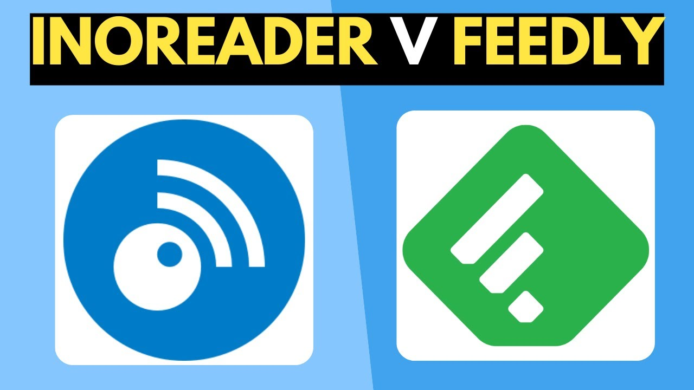
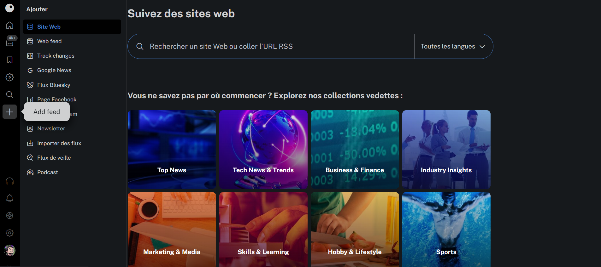
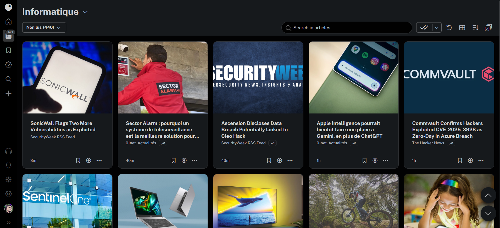
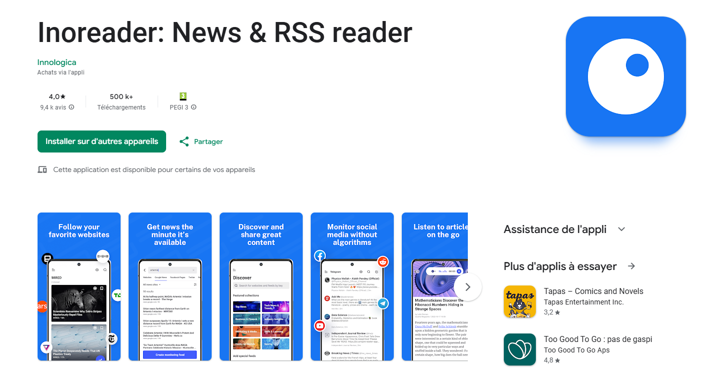

Qu'est-ce qu'un aggrégateur de flux RSS ?
Un agrégateur de flux RSS (Rich Site Summary) est un outil,
sous forme de logiciel ou d’application web, qui permet de rassembler
automatiquement en un seul endroit les nouveautés publiées sur
différents sites internet, blogs ou médias. Au lieu de visiter
chaque site séparément pour vérifier les mises à jour,
l’agrégateur affiche, sur une interface unique et personnalisable,
toutes les actualités provenant des sources auxquelles vous vous êtes abonné
1. Choix de la Solution
Le projet nous a été donné le 02/10/2024 afin de se familiariser avec le mode projet
Nous devions déterminer en groupe quel agrégateur de Flux RSS nous allions utiliser
Les trois choix déterminés par notre groupe étaient Feedly, Inoreader et Feedreader
Chacun avait un choix à tester tout en listant les fonctionnalités pour le comparatif
Le choix se portera sur Inoreader

2. Justification de Solution
Inoreader possède beaucoup de fonctionnalités en version gratuite
La personnalisation poussée de l’interface et des flux est un atout majeur
Son interface est très intuitive et pousse l'utilisateur à parcourir son contenu

3. Mise en place de la veille
Je me suis inscrit sur le site officiel d’Inoreader via navigateur
Ajout de flux RSS de quelques sites ainsi que des flux conseillés par Inoreader
Création de dossiers pour organiser mes flux, afin de séparer les catégories

3. Application Inoreader
J’ai téléchargé l’application Inoreader depuis le Play Store (Android)
Je me suis connecté avec les mêmes identifiants que sur le navigateur
L'application me permet d’avoir une veille synchronisée en temps réel

J’utilise Inoreader comme principal outil pour ma veille informatique car il me permet de centraliser et d’organiser efficacement de nombreuses sources d’information. Sa capacité à gérer des flux RSS variés, à créer des dossiers thématiques, et à filtrer les contenus facilite grandement la gestion de ma veille professionnelle.